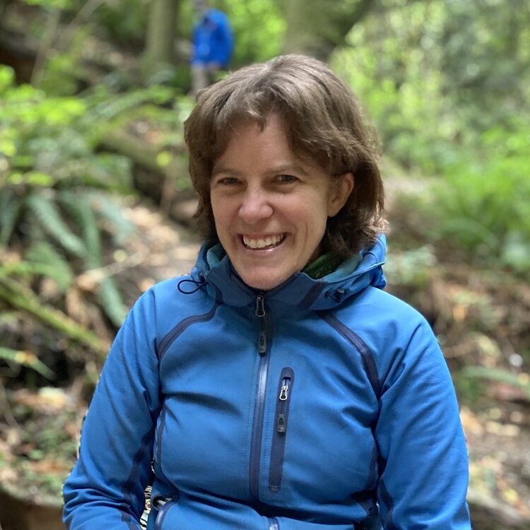
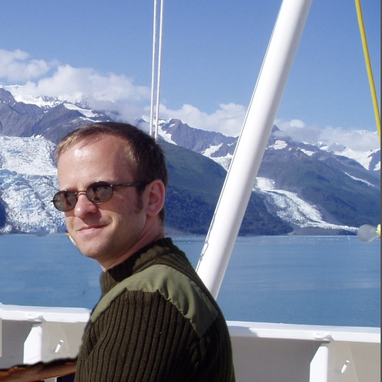

Our goal is to build case studies of how animals are impacted by climate change to improve our approach to climate change biology education, policy, and research.
Infrared imagery offers a unique opportunity to see biophysical properties in real time. We can watch organisms heat up, cool down, and generally transfer heat back and forth throughout their environment. In the TrEnCh Project, we use infrared imagery to help people see the world from a thermal perspective because we believe it’s an intuitive first step to understanding microclimate and the impacts of warming.
FLIR cameras are extensively used, increasingly so with the availability of FLIR thermal cameras that attach to phones. However, the cameras produce images in a non-standard format (radiometric jpgs) and analyzing the images requires purchasing expensive FLIR software. Project collaborator Tattersall has produced an open source R package ThermImage that converts the images into standard formats and extracts additional data to allow analysis in commonly used and open source software such as ImageJ. We aim to make these tools more accessible to empower more people tso view the world from a thermal perspective. We iniitally offered a web image conversion tool, but we have transitioned this site to focus on education as coding skills and resources hve made the tools more accessible. Education and outreach resources promote understanding how organisms experience their environment. We offer a gallery to allow users to explore the images to understand how organisms interact with their environments.
Currently most analyses of the impacts of climate change on organisms are based on air temperatures, but body temperatures of ectotherms can differ from air temperatures by tens of degrees. Additionally, the characteristics and behaviors of organisms can result in their experiencing different body temperatures even in the same environment with repercussions for species interactions. Moving beyond air temperatures to consider body temperatures may thus be essential to accurately forecasting climate change impacts. Thermal images provide compelling visual examples of why we need to move beyond air temperatures in examining climate change impacts as well as data that can inform approaches for modelling how organisms interact with their environment.
Thermal cameras are available across a wide range of resolutions, temperature ranges, sizes, and customizations, and prices vary from hundreds to many thousands of dollars. The number of pixels available in thermal cameras is substantially less than visual cameras and is a principal determinant of cost. Recently, inexpensive thermal cameras such as the FLIR one and SEEK that attach to Android or iOS phones have become available starting at ~$200. Although they have a limited number of pixels (starting at 60x80), they can often create more visually compelling and interpretable images due to their approach of hybridizing visual and thermal images. They are also much easier to transport thus use whenever a compelling thermal scene arises. However, the low number of pixels and lack of customization limits their research applications. Comparisons of available thermal cameras can be found online.
Site development based with University of Washington, in the Department of Biology. We are funded by AI for Earth, a Microsoft initiative.

